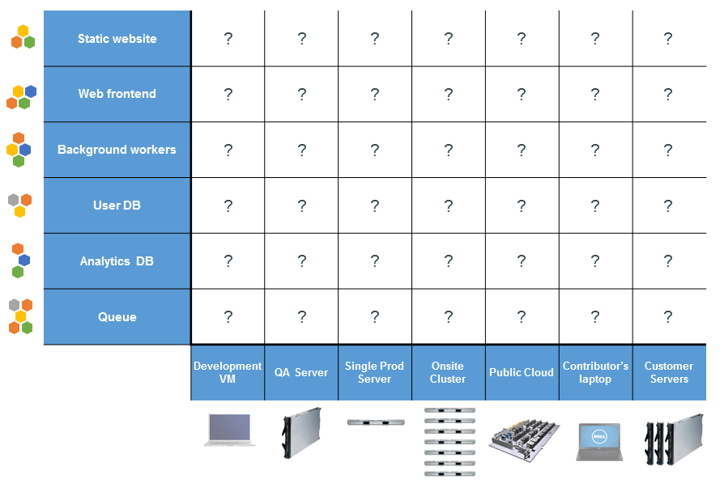

Deployando o Mconf
Docker e Ansible
Automação do deploy = indispensável
- Fácil de reproduzir
- Documentado (com o código)
- Menor risco de erros humanos
- Mais confiança
Hoje = Capistrano + Chef
> ssh mconf@servidor.com
> chef-client solo.json
“Resolvido está, agora só falta resolver bonito”
✓ Facilitar e agilizar deploy
✓ Facilitar setup de desenvolvimento
Ferramenta para trabalhar com containers (!= vm)
Acaba com o "funciona na minha máquina"
Desenvolvimento e produção
The Matrix From Hell
Also a Matrix From Hell

Shipping Container

Pontos fortes
- Isola dependências (elimina conflitos)
- Portável
- Imagens, snapshots
- Automação, repetição
- Reduz inconsistências dev, test, prod
Um container, uma aplicação
Exemplo portal
- Apache
- Passenger
- Redis
- Monit
- Ruby
- Dependências (gems e pacotes)
- Mconf-Web
- + Arquivos de configuração
DEMO

Ansible
Automação de infraestrutura
Deploy + Configuração + Entrega contínua
ssh na máquina + faz algo